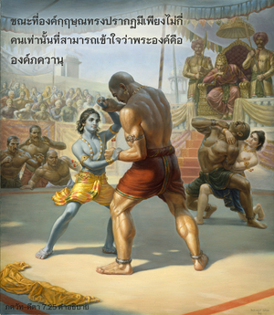
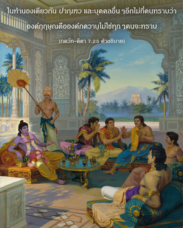

ข้าไม่เคยปรากฏกับคนโง่และผู้ด้อยปัญญา สำหรับพวกนี้ข้าถูกปิดบังด้วยพลังเบื้องสูงของข้า ดังนั้นพวกเขาจึงไม่รู้ว่าข้าไม่มีการเกิดและไม่มีความผิดพลาด



อาจเถียงว่าเนื่องจากองค์ศฺรีกฺฤษฺณทรงปรากฏบนโลกนี้ และทุกคนได้เห็นองค์กฺฤษฺณ แล้วเหตุใดปัจจุบันนี้พระองค์จึงไม่ทรงปรากฏให้ทุกคนเห็นอีก อันที่จริงพระองค์ทรงไม่ได้ปรากฏต่อทุกคน ขณะที่องค์กฺฤษฺณทรงปรากฏมีเพียงไม่กี่คนเท่านั้นที่สามารถเข้าใจว่าพระองค์คือ องค์ภควานฺ ณ ที่ชุมนุมของเหล่า กุรุ เมื่อ ศิศุปาล พูดต่อต้านการที่องค์กฺฤษฺณทรงได้รับเลือกให้เป็นองค์ประธานในที่ประชุม ภีษฺม สนับสนุนองค์กฺฤษฺณ และประกาศว่าองค์กฺฤษฺณ คือ องค์ภควานฺ ในทำนองเดียวกัน ปาณฺฑว และบุคคลอื่นๆ อีกไม่กี่คนทราบว่าองค์กฺฤษฺณ คือ องค์ภควานฺไม่ใช่ทุกๆ คนจะทราบ พระองค์ทรงมิได้เปิดเผยต่อผู้ไม่ใช่สาวก และบุคคลธรรมดาทั่วไป ดังนั้น ใน ภควัท-คีตา องค์กฺฤษฺณทรงตรัสว่า นอกจากสาวกผู้บริสุทธิ์ของพระองค์แล้วมวลมนุษย์พิจารณาว่าองค์กฺฤษฺณก็เหมือนกับพวกตน พระองค์ทรงปรากฏต่อสาวกในฐานะเป็นแหล่งกำเนิดแห่งความสุขทั้งปวง แต่สำหรับบุคคลอื่นผู้ที่ด้อยปัญญา ไม่ใช่สาวกพระองค์ทรงถูกปกคลุมด้วยพลังงานเบื้องสูง
บทมนต์ของพระนาง กุนฺตี ใน ศฺรีมทฺ-ภาควตมฺ (1.8.19) ได้กล่าวไว้ว่าองค์ภควานฺทรงถูกปกคุลมด้วยม่านแห่ง โยค-มายา ดังนั้น บุคคลทั่วไปไม่สามารถเข้าใจพระองค์ ม่านแห่ง โยค-มายา นี้ได้มีการยืนยันไว้ใน อีโศปนิษทฺ (มนฺตฺร 15) โดยสาวกภาวนาว่า
หิรณฺมเยน ปาเตฺรณ
สตฺยสฺยาปิหิตํ มุขมฺ
ตตฺ ตฺวํ ปูษนฺนฺ อปาวฺฤณุ
สตฺย-ธรฺมาย ทฺฤษฺฏเย
“โอ้ องค์ภควานฺของข้า พระองค์ทรงเป็นผู้ดำรงรักษาจักรวาลทั้งหมด และการอุทิศตนเสียสละรับใช้ต่อพระองค์เป็นหลักศาสนาที่สูงสุด ดังนั้น ข้าพเจ้าขอสวดภาวนาให้พระองค์ทรงดำรงรักษาข้าพเจ้าไว้เช่นเดียวกัน รูปลักษณ์ทิพย์ของพระองค์ถูกปกคลุมด้วย โยค-มายา รัศมี พฺรหฺม-โชฺยติรฺ คือ พลังเบื้องสูงที่ปกคลุมพระองค์ ขอให้พระองค์ทรงโปรดกรุณาเคลื่อนย้ายรัศมีอันเจิดจรัสที่บังข้าไม่ให้เห็นรูปลักษณ์ สจฺ-จิทฺ-อานนฺท-วิคฺรห ของพระองค์ ซึ่งเป็นอมตะเปี่ยมไปด้วยความปลื้มปีติสุขและความรู้” องค์ภควานฺในรูปลักษณ์ทิพยที่ปลื้มปีติสุข และเปี่ยมความรู้ถูกปกคลุมด้วยพลังงานเบื้องสูงแห่ง พฺรหฺม-โชฺยติรฺ และผู้ด้อยปัญญาที่ไม่เชื่อในรูปลักษณ์ไม่สามารถเห็นองค์ภควานฺด้วยเหตุนี้
ใน ศฺรีมทฺ-ภาควตมฺ (10.14.7) มีบทมนต์โดยพระพรหมเช่นกันดังนี้ “โอ้ องค์ภควานฺ โอ้ องค์อภิวิญญาณ โอ้ ปรมาจารย์แห่งมวลอิทธิฤทธิ์จะมีผู้ใดสามารถคำนวณพลังอำนาจ และลีลาของพระองค์ในโลกนี้ได้ พระองค์ทรงแผ่ขยายพลังงานเบื้องสูงของพระองค์ตลอดเวลา จึงไม่มีผู้ใดสามารถเข้าใจพระองค์ นักวิทยาศาสตร์ และนักวิชาการผู้คงแก่เรียนสามารถตรวจสอบธาตุพื้นฐานของละอองปรมณูในโลกวัตถุ หรือแม้แต่ดาวเคราะห์ต่างๆ แต่จะไม่สามารถคำนวณพลังงาน และพลังอำนาจของพระองค์ ถึงแม้ว่าพระองค์ทรงปรากฏอยู่ต่อหน้าพวกเขา” ศฺรีกฺฤษฺณ บุคลิกภาพสูงสุดแห่งพระเจ้าทรงไม่เพียงแต่ไม่มีการเกิดเท่านั้น แต่ยังทรงเป็น อวฺยย ไม่มีที่สิ้นสุด รูปลักษณ์อมตะแห่งความปลื้มปีติสุข และความรู้ รวมทั้งพลังงานของพระองค์ทั้งหมดทรงไร้ขอบเขตไม่มีที่สิ้นสุด